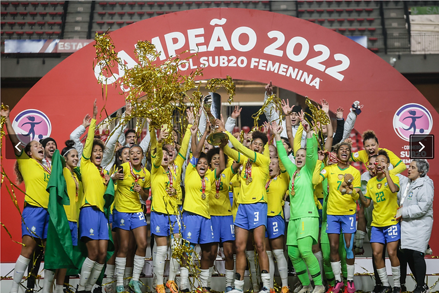

A Seleção Feminina Sub-20 foi a campeã invicta do Campeonato Sul-Americano 2022, no Chile. Motivo de muita comemoração de todos, e da ABRAPESP que acompanha o trabalho reconhecido da Psicóloga do Esporte Luciana Angelo
Luciana integrou a comissão técnica em outubro de 2020 com o objetivo de realizar a preparação psicológica para o Sul-Americano Feminino Sub -20 que aconteceu em abril de 2022 em Viña del Mar (Chile). Com a conquista, a seleção está classificada para o Mundial Sub-20, na Costa Rica, em agosto de 2022.
O aproveitamento foi 100%. As brasileiras venceram todas as partidas, nas quais marcaram 21 gols e não sofreram nenhum.
Para vencer é preciso muito preparo, não só técnico e tático, como psicológico. O rendimento e performance são influenciados pelo estado emocional da equipe e pelas atletas.
“A psicologia auxilia muito na nossa performance, ainda mais numa competição como o Campeonato Sul-Americano. É preciso gerenciar nossos pensamentos, nossas emoções. Isso faz total diferença, porque há momentos em que precisamos relaxar e outros em que precisamos estar extremamente ligados, então é necessário estar bem equilibrada para isso” , disse a meia Laura Valverde em entrevista para a CBF.
“A partir do conhecimento das emoções, gerenciá-las se torna muito mais fácil, tanto para o relaxamento, para lidar com a pressão, tanto para uma estimulação, para estarem mais atentas, ativas, alertas e vigorosas para aquilo que elas precisam executar no campo durante o jogo”, explicou Luciana
Os tabus relativos à saúde mental de atletas de alto rendimento vêm ganhando cada vez mais espaço na mídia e nos debates, o trabalho de psicologia do esporte utiliza não somente técnicas individuais e coletivas, mas principalmente, a observação cuidadosa facilitando a análise e a solução de situações adversas ao rendimento.
A experiência do profissional também é muito importante. Luciana participou de 11 convocações da Seleção Brasileira sub 20 desde 2020. Com 30 anos de experiência na área esportiva e o reconhecimento do valor do trabalho multidisciplinar, a psicóloga aponta que na fase entre o amadorismo e a profissionalização, a preparação psicológica tem relevância ao orientar e apoiar as mudanças vividas pelas atletas contribuindo para um processo consciente e gerenciável.